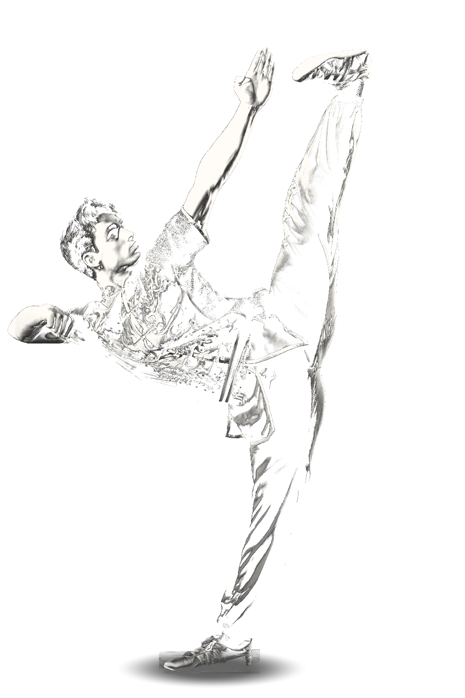
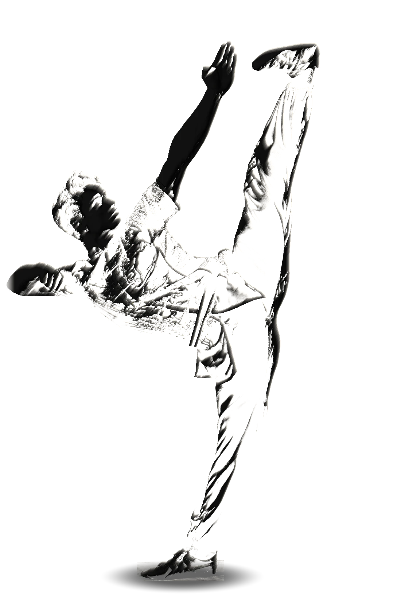
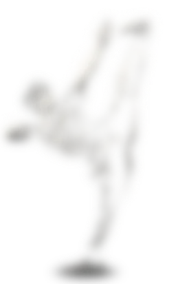
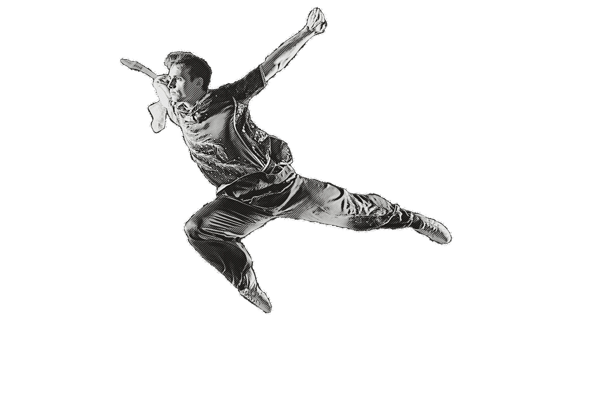

Single
feedback
feedback
49 € · one routine
One full analysis
You film. You send. We analyze your problem together.




Barely a second in real time. Slowed to a quarter, it is read frame by frame, point by point.
The gaze pierces ahead of the blade, not at it.
Cutting clearly ahead and holding the arms in place — that is what creates the flying effect.
The chest should lean off the axis of the pelvis. This is where you reach for the intended cut.
Full extension from hip to heel, then the ankle flexes and the line breaks. A pointed foot finishes the whole movement and shows care for detail.
The front knee sits under the hip line. Drawn higher, it lifts the whole silhouette and creates the impression of “time in the air”.
Step by step, the mechanics are stitched together, each with its exercise and what to watch for. Your full routine gets the same reading, section by section.
The same analysis for all levels: beginner, intermediate, professional.
Secure payment · receipt by email · exchanges on WhatsApp · Terms of sale